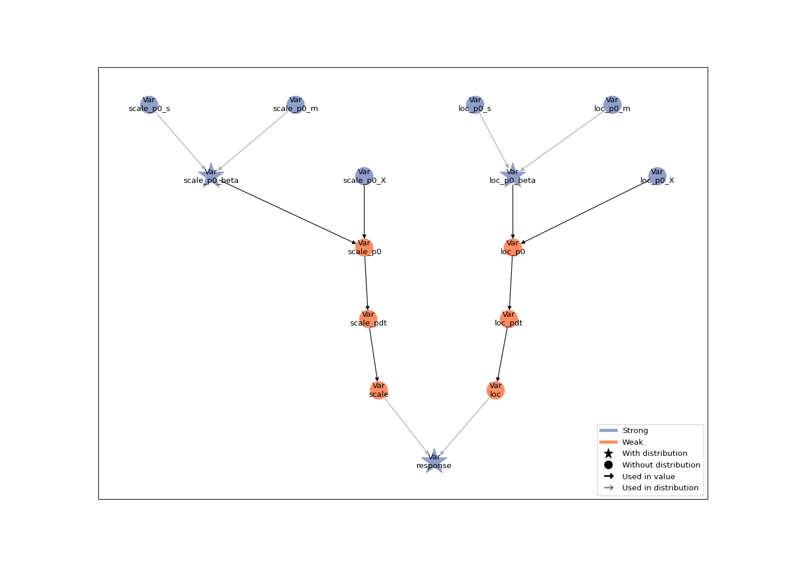
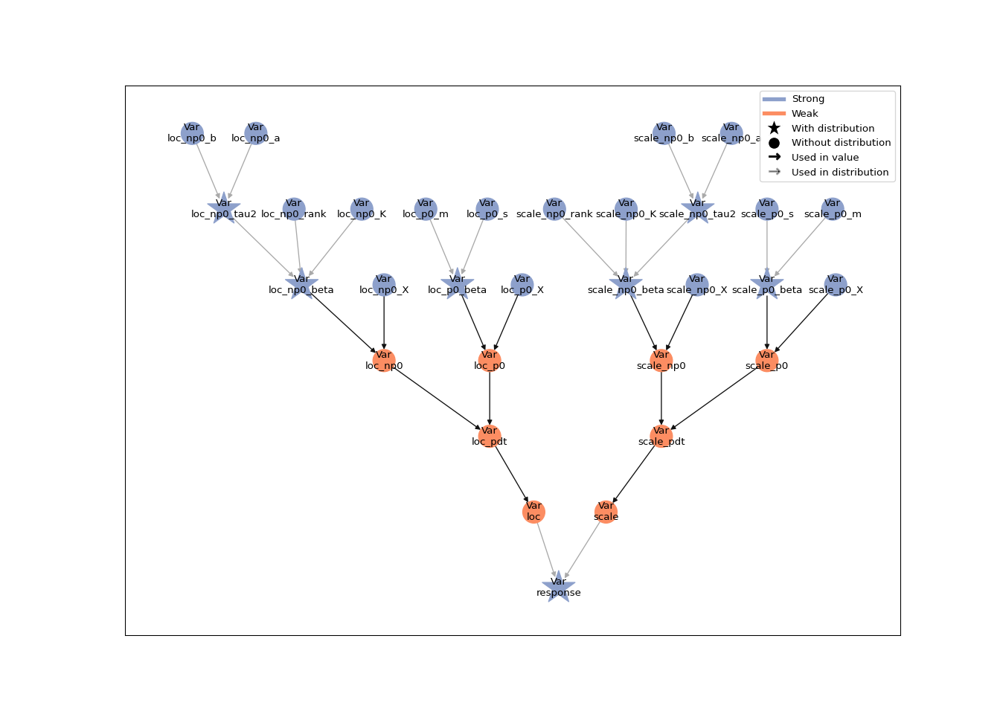

The goal of RLiesel is to provide an R interface for the probabilistic programming framework Liesel.
RLiesel assists the user in expressing semi-parametric regression models as probabilistic graphical models (PGMs). It supports generalized additive models for location, scale and shape (GAMLSS) with different response distributions, spline-based smooth terms and shrinkage priors. In a second step, the models can be transferred to Python for the further analysis.
Installation
You can install the development version of RLiesel by running the following commands:
# install.packages("devtools")
devtools::install_github("liesel-devs/rliesel")Usage
The liesel() function is the workhorse of RLiesel and can be used to set up semi-parametric regression models. We illustrate the flexibility of the function by means of two examples.
A linear model
In the first example, we assume a linear relationship between the mean and the log-standard deviation of a response variable y and an explanatory variable x.
The regression predictors of the distributional parameters are specified with the predictor() function. The predictors are then passed to the predictors argument of the liesel() function as a named list. Finally, the conditional distribution of the response variable needs to be defined via the distribution argument:
linear_mod <- liesel(
response = y,
distribution = "Normal",
predictors = list(
loc = predictor(~x, inverse_link = "Identity"),
scale = predictor(~x, inverse_link = "Exp")
)
)The hierarchical structure of a Liesel model can be visualized with the generic plot() function:
plot(linear_mod)
The attributes of the Python model object such as the nodes or the log-probability can be accessed in R with the $ operator, e.g. linear_mod$nodes$loc_p1_beta$value or linear_mod$log_prob.
A generalized additive model (GAM)
In the second example, both the location and the scale parameter are connected to the explanatory variable x through a smoothing spline:
y <- rnorm(n, mean = sin(2 * pi * x), sd = exp(sin(2 * pi * x)))
spline_mod <- liesel(
response = y,
distribution = "Normal",
predictors = list(
loc = predictor(~s(x), inverse_link = "Identity"),
scale = predictor(~s(x), inverse_link = "Exp")
)
)
## plot(spline_mod)
Users who are familiar with the mgcv package may recognize the syntax from the gam() function, which can be used to set up an equivalent model as follows:
Finally, the Liesel model can be saved to a pickle file with the save_model() command:
save_model(spline_mod, "spline-mod.pickle")